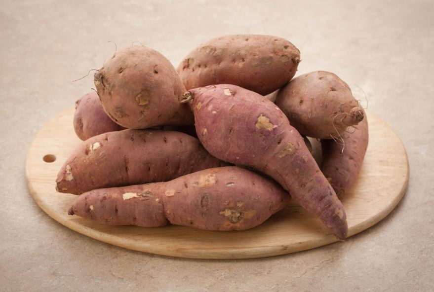

다이어트 방법으로는 음식을 제한하는 방법이 대표적입니다. 그밖에 식사 행동을 바꾸는 행동,신체 활등을 늘리는 방법이 있지만 최고의 다이어트는 식단을 조절하는 방법입니다. 식단을 조절하기전에 어떤 음식이 다이어트에 좋은지 알아볼까요?

● 고구마
성분은 덩이줄기에 수분 75%, 녹말 13∼20%, 단백질 1.5∼2.6%, 무기질 0.6∼1%, 환원당 0.03mg, 비타민 C 10~30mg이 들어 있다.
질소화합물의 절반을 차지하는 아미노산 중에는 밀가루보다 더 많은 필수 아미노산이 함유되어 있다.
그리고 날감자 100g은 열량 80cal에 해당한다.
성분은 수분 69.39%, 당질 27.7%, 단백질 1.3% 등이며 주성분은 녹말이다.
제2차 세계대전 이전에는 대부분 식용으로 소비하였으나, 최근에는 식용이 40% 안팎에 그쳐 예전처럼 주식을 보조하는 식품이 아니라 주로 부식 또는 간식으로 이용한다.
고구마는 100g에 128 칼로리로 영양분이 높은 음식이지만 GI지수가 낮아서 혈당을 높이지 않고 다이어트가 가능하며 포만감이 있기때문에 다이어트 하기 알맞음 음식이라고 할수있습니다.
그리고 고구마는 식이섬유가 많이 있어서 변비개선과 피부미용에 도움을 줄수 있습니다.
고구마는 아침 과 저녁에 1~2개 정도로 하고, 기호에 따라 우유나 샐러드를 같이 드시면 좋습니다
점심은 한식위주의 식단을 드시는게 좋답니다.
● 사과
과일다이어트의 대표적인 다이어트로 여자라면 누구나 한번쯤 시도해 봤을 정도로 많이 알려진 다이어트입니다.
사과 다이어트는 3일 동안 사과만을 먹어 감량을 하는 다이어트로, 사과에는 수용성 음식 섬유의 일종인 펙틴이 다량 함유되어 있는데 이는 장을 자극해 변비를 예방하고 설사에 큰 도움을줍니다.
또한 장내의 가스가 생기는 것을 막으며 피부 또한 투명하게 해줍니다.
사과의 칼륨은 신장의 작용을 활발하게 하므로 체내에 쓸데없는 염분이나 수분을 배설하게 도와줍니다.
단 주의점이 있다면 사과에 탄산이 많고 산성이 강해 장기가 사과 다이어트를 하는 것은 위가 상할 우려가 있으며 위산과다나 위궤양이 있는 사람 또는 감기에 걸린 사람은 피하는 것이 좋습니다.
3일 동안 사과만 먹는 방법
사과를 깨끗이 씻어 식사 때 밥 대신 1-2개씩 그리고 배고플 때마다 먹습니다.
껍질 째 먹는 것이 좋으며 다이어트 중에는 물을 충분히 마셔 수분을 보충합니다.
설탕이나 프림을 넣지 않은 블랙 커피를 마셔도 좋습니다.